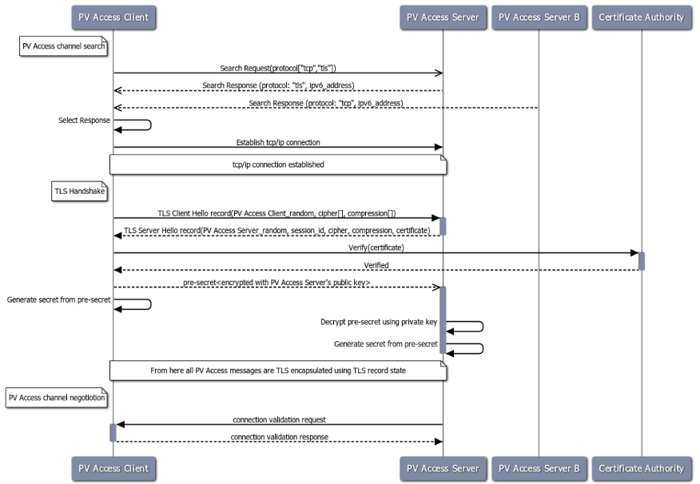

security Secure PVAccess¶
Secure PVAccess (SPVA) enhances the existing PVAccess protocol by integrating Transport Layer Security (TLS) with comprehensive Cert Management, enabling encrypted communication channels and authenticated connections between EPICS clients and servers (EPICS agents) - see AuthN & AuthZ.
For a glossary of terms see: SPVA Glossary
Key Features:
Encrypted communication using
TLS 1.3Certificate-based authentication
Comprehensive certificate lifecycle management
Backward compatibility with existing PVAccess deployments
Integration with site authentication systems
In SPVA terminology, an EPICS Agent refers to any PVAccess network client.
Note: This release requires specific unmerged changes to epics-base.
See Secure PVXS to get started.
Transport Layer Security¶
SPVA uses TLS 1.3 to establish secure connections between EPICS agents. Both client and server
can authenticate their peer using X.509 certificates. Key features of the TLS implementation:
Mutual authentication when both peers present valid certificates
Server-only authentication when only the server presents a certificate
Fallback to
TCPwhenTLSis not configured or certificates are invalidCertificate status verification during connection establishment
Supported Keychain-File Formats, Encodings and File Types¶
File Type |
Extension |
Encoding |
Includes Private Key? |
Includes Certificate Chain? |
Common Usage |
|---|---|---|---|---|---|
PKCS#12
|
.p12, .pfx |
Binary
|
Optional (password)
|
Yes
|
Distributing cert key
|
To use any of these formats just use the appropriate file extension when specifying the keychain file.
Unsupported Certificate Formats, Encodings and File Types¶
File Type |
Extension |
Encoding |
Includes Private Key? |
Includes Certificate Chain? |
Common Usage |
|---|---|---|---|---|---|
PEM
|
.pem, .crt,.cer, .key |
Base64
|
Optional
|
Optional (concatenated)
|
Web servers, OpenSSL
|
JKS
|
.jks |
Binary
|
Optional
|
Yes
|
Java applications
|
TLS encapsulation of the PVAccess protocol¶
In network protocols, encapsulation is used to transport a higher layer protocol over a lower layer protocol, e.g., TCP over IP.
In the context of TLS, PVAccess messages are encapsulated within TLS records for secure transport.
Encapsulation involves wrapping the higher-layer protocol’s data within the lower-layer protocol’s format.
TLS is so named because it wraps all data above the Transport Layer in an impermeable Security layer.
For SPVA, this means PVAccess messages are wrapped in TLS records that include headers specifying
content type, protocol version, and length, followed by the encrypted PVAccess data as the payload.
Note: We use TLS version 1.3 for Secure PVAccess. This version deprecates support for connection renegotiation which is a security risk. So any
connections that are established using Secure PVAccess will not be renegotiated but will be closed if a certificate is revoked or needs to be renewed
Environment Variables¶
The following environment variables control SPVA behavior:
Note
There is an implied hierarchy to the applicability of the environment variables such that
the PVAS version supersedes a PVA version.
So, if an EPICS server agent wants to specify its keychain file location it can simply
provide the EPICS_PVA_TLS_KEYCHAIN environment variable as long as
EPICS_PVAS_TLS_KEYCHAIN is not configured.
Name |
Key |
Value |
Description |
|---|---|---|---|
EPICS_PVA_TLS_KEYCHAIN |
{fully qualified path to keychain file} e.g. |
This is the string that determines the fully qualified path to the keychain file that contains the certificate, and private keys used in the TLS handshake. Note: If not specified then TLS is disabled |
|
EPICS_PVAS_TLS_KEYCHAIN |
|||
EPICS_PVA_TLS_KEYCHAIN _PWD_FILE |
{fully qualified path to keychain password file} e.g. |
This is the string that determines the fully qualified path to a file that contains the password that unlocks the keychain file. This is optional. If not specified, the keychain file contents will not be encrypted. It is not recommended to not specify a password file. |
|
EPICS_PVAS_TLS_KEYCHAIN _PWD_FILE |
|||
EPICS_PVA_TLS_OPTIONS Sets the TLS options for clients and servers. A string containing key/value pairs separated by commas, tabs or newlines |
Determines whether client certificates are required |
|
Require client certificate to be presented. |
|
Don’t require client certificate to be presented. |
||
Determines what to do when an EPICS agent’s certificate has expired, and a new one can’t be automatically provisioned |
|
For servers only tcp search requests will be responded to. For clients then no client certificate will be presented in the TLS handshake (but searches will still offer both tls and tcp as supported protocols) |
|
|
The process will exit gracefully. |
||
|
Servers will not respond to any requests until a new certificate is successfully provisioned. It will keep retrying the keychain file periodically. When a valid certificate is available it will continue as normal. For a client standby has the same effect as shutdown. |
||
Determines what to do when CMS is unavailable |
|
If revocation status check is required but CMS cannot degrade connections to TCO mode |
|
|
Otherwise throw an exception |
||
Determines whether cert status is monitored |
This flag, if present, disables certificate status monitoring so clients / servers will not know if certificates have been revoked. Default: status monitoring is not disabled |
||
Determines whether stapling is enabled |
|
Servers won’t staple certificate status, clients won’t request stapling information during TLS handshake |
|
|
Don’t disable stapling |
||
EPICS_PVA_TLS_PORT |
{port number} default e.g. |
This is a number that determines the port used for the Secure PVAccess, either as the port on the Secure PVAccess server for clients to connect to - PVA, or as the local port number for Secure PVAccess servers to listen on - PVAS. |
|
EPICS_PVAS_TLS_PORT |
|||
EPICS_PVAS_TLS_STOP _IF_NO_CERT. |
|
For servers only. Stop if no certificate is provided. |
|
|
|||
SSLKEYLOGFILE |
{fully qualified path to key log file} e.g. |
This is the path to the SSL key log file that, in conjunction
with the build-time macro |
|
API Configuration Options¶
The following are new configuration options now available
in both the pvxs::server::Config and pvxs::client::Config classes,
via their public base pvxs::impl::ConfigCommon class:
pvxs::impl::ConfigCommon::expiration_behaviour- Set certificate expiration behaviorpvxs::impl::ConfigCommon::tls_keychain_file- Set keychain file pathpvxs::impl::ConfigCommon::tls_keychain_pwd- Set keychain file passwordpvxs::impl::ConfigCommon::tls_client_cert_required- Control client certificate requirementspvxs::impl::ConfigCommon::tls_disable_stapling- Disable certificate status staplingpvxs::impl::ConfigCommon::tls_disable_status_check- Disable certificate status checkingpvxs::impl::ConfigCommon::tls_disabled- Disable TLSpvxs::impl::ConfigCommon::tls_port- Set TLS port numberpvxs::impl::ConfigCommon::tls_throw_if_cant_verify- Control verification failure behavior
Here are server-specific configuration options:
pvxs::server::Config::tls_stop_if_no_cert- Stop server if certificate unavailablepvxs::server::Config::tls_throw_if_no_cert- Throw exception if certificate unavailable
API Additions for Secure PVAccess¶
Runtime Reconfiguration¶
Allows runtime reconfiguration of a TLS connection. It does this by dropping all TLS connections and then re-initialising them using the given configuration. This means checking if the certificates and keys exist, loading and verifying them, checking for status and status of peers, etc.
pvxs::client::Context::reconfigure and pvxs::server::Server::reconfigure allow runtime TLS configuration updates:
// Initial client setup with certificate
auto cli_conf(serv.clientConfig());
cli_conf.tls_keychain_file = "client1.p12";
auto cli(cli_conf.build());
// Later reconfiguration with new certificate
cli_conf = cli.config();
cli_conf.tls_keychain_file = "client2.p12";
cli_conf.tls_keychain_pwd = "pwd";
cli.reconfigure(cli_conf);
Wildcard PV Support¶
This addition is based on the Wildcard PV support included in epics-base since version 3. It extends this support to pvxs allowing PVs to be specified as wildcard patterns. We use this to provide individualised PVs for each certificate’s status management.
pvxs::server::SharedWildcardPV support for pattern-matched PV names:
// Define a server that responds to any SEARCH request with WILDCARD:PV:<4-characters>:<any-string>
// It will extract the 4-character part of the PV name as the `id` and
// the last string as the `name`
SharedWildcardPV wildcard_pv(SharedWildcardPV::buildMailbox());
wildcard_pv.onFirstConnect([](SharedWildcardPV &pv, const std::string &pv_name,
const std::list<std::string> ¶meters) {
// Extract id and name from parameters
auto it = parameters.begin();
const std::string &id = *it;
const std::string &name = *++it;
// Process and post value
if (pv.isOpen(pv_name)) {
pv.post(pv_name, value);
} else {
pv.open(pv_name, value);
}
});
wildcard_pv.onLastDisconnect([](SharedWildcardPV &pv, const std::string &pv_name,
const std::list<std::string> ¶meters) {
pv.close(pv_name);
});
// Add wildcard PV to server
serv.addPV("WILDCARD:PV:????:*", wildcard_pv);
Protocol Operation¶
Connection Establishment¶
Connections are established using TLS if at least the server side is configured for TLS.
Prior to the TLS handshake:
Certificates are loaded and validated
CA trust is verified all the way down the chain
Both sides subscribe to certificate status where configured for their own certificate and all those in the chain
All certificate statues are cached
During the TLS handshake:
Certificates are exchanged
Servers staple cached certificate status in handshake
Both sides validate and verify their peer certificate against trusted root certificates
After the TLS handshake:
Both sides subscribe to peer certificate status where configured
Clients may use OCSP stapled status immediately before waiting for status monitoring results
State Machines¶
Server TLS Context State Machine:
The server transitions based on:
Certificate validity
CA trust status
Certificate status monitoring results
API Configuration Options options (e.g., stop_if_no_cert)
States:
Init: Initial state, loads and validates certificatesTcpReady: Responds to TCP protocol requests when certificates are validTlsReady: Responds to both TCP and TLS protocol requestsDegradedMode: Fallback state for invalid certificates or missing TLS configuration
Client TLS Context State Machine:
Similar to server state machine but
Never exits on TLS configuration issues
Moves to
DEGRADEDstate and continues with TCP protocol if needed
Search Handler State Machines¶
Server Search Handler:
States:
DegradedMode: Responds only to TCP protocol requestsTcpReady: Responds only to TCP protocol requests, ignores TLSTlsReady: Responds to both TCP and TLS protocol requests
Client Search Handler:
Similar to server but from client perspective
Executes
TLS_CONNECTORon successful TLS handshakeFalls back to
TCP_CONNECTORotherwise
Connection State Machines¶
Server Connection:
Manages TLS handshake and certificate validation
Monitors peer certificate status
Continues normal operation only after successful validation
Client Connection:
Similar to server but verifies stapled certificates
Destroys connection on completion
TLS Handshake¶
The following diagram shows the simplified TLS handshake sequence between server and client:
Each agent uses an
X.509certificate for peer authenticationDuring handshake:
Certificates are exchanged
Both sides verify peer certificates against trusted root certificates
Multiple certificates may be verified in the chain to trusted CA
Local verification checks signature, expiration, and usage flags
SPVA certificates may include status monitoring extension requiring:
Subscription to certificate status from issuing Certificate Authority’s service (PVACMS)
Receipt of GOOD status before trust
Agents subscribe to:
Peer’s certificate status
Own certificate status and certificate chain
Servers cache and staple certificate status in handshake
OCSP and Status Verification¶
OCSP Stapling¶
OCSP Stapling optimizes certificate status verification during TLS handshake:

Enabled by default with status monitoring extension
Disable using EPICS_PVAS_TLS_OPTIONS=”disable_stapling”
Status Verification¶
Certificate Status recieved from the PVACMS for a certificate returns a
GOODstatus if, and only if, the certificate status is good and so is that of its certificate authority certificate chain all the way back to the root certificate. In this way agents need monitor only their own entity certificate and that of their peer.
Certificate status verification occurs at several points:
Initial Connection
Certificates are verified during TLS handshake
Both peers verify against a trusted root certificates that they have loaded from their own keychain file
Basic checks include:
Signature validation
Expiration dates
Usage flags
Runtime Monitoring
EPICS agents subscribe to:
Their own certificate status
Peer entity certificate status
Status Response Handling
If status not received:
Search requests are ignored
Client retries later
If status not GOOD:
Server offers only TCP protocol
Client fails connection validation
If status GOOD:
Server offers both TCP and TLS
Connection proceeds normally
Optimization
Servers cache status for stapling
Clients can use stapled status
Reduces initial PVACMS requests
Status Caching¶
Beacons¶
PVAccess Beacon Messages have not been upgraded to TLS support. Important considerations:
Historical Use: - Previously used to trigger resend of unanswered Search Messages - This practice is now discouraged - Other methods should be used to determine server status
Current Behavior: - Servers broadcast on any configured port - Clients should not use ports directly - Use only as server availability indicator
Security Implications: - Beacons remain unencrypted - Do not contain sensitive information - Cannot be used for secure discovery
Protocol Debugging¶
TLS Packet Inspection¶
For detailed TLS traffic analysis:
Enable key logging at build time:
Set PVXS_ENABLE_SSLKEYLOGFILE during compilation
Configure runtime logging:
export SSLKEYLOGFILE=/tmp/sslkeylog.log
Configure Wireshark:
Edit > Preferences > Protocols > TLS
Set “(Pre)-Master-Secret log filename” to match SSLKEYLOGFILE path
TLS traffic will now be decrypted in Wireshark
Debug Logging¶
Enable detailed PVXS debug logging:
Environment variable method:
export PVXS_LOG="pvxs.stapling*=DEBUG"
New Debug Categories:
pvxs.certs.auth- Authenticatorspvxs.auth.cfg- Authn configurationpvxs.auth.cms- CMSpvxs.auth.jwt- JWT Authenticatorpvxs.auth.krb- Kerberos Authenticatorpvxs.auth.mon- Certificate Status Monitoringpvxs.auth.stat- Certificate Statuspvxs.auth.std- Standard Authenticatorpvxs.auth.tool- Certificate Management Tools (pvacert)pvxs.certs.status- Certificate Status Managementpvxs.ossl.init- TLS initializationpvxs.ossl.io- TLS I/Opvxs.stapling- OCSP stapling
Network Deployment¶
Deployment Patterns¶
Standard Network Deployment
Agents run on networked hosts with local storage
Certificates stored in local protected directories
Standard TLS configuration applies
Diskless Network Deployment
Agents run on hosts without local storage
Certificates stored on network-mounted storage
Special considerations for certificate protection
Hybrid Deployment
Mix of standard and diskless nodes
Common trust anchor required
Consistent Cert Management across node types
Certificate Storage¶
Standard Nodes:
XDG_CONFIG_HOMEstandard is used by default to locate certificates for clients and serverdefault if not set is
~/.configwe append
/pva/1.3/to make the full path default to~/.config/pva/1.3/client certificates are stored in
client.p12by defaultserver certificates are stored in
server.p12by default
Store certificates in local protected directory
the files are protected with
400so that only the owner can read
Automatic reconfiguration on certificate updates
Diskless Nodes:
Use network-mounted storage (NFS, SMB/CIFS, AFP)
Protected certificate storage location
Optional password protection via diskless server
Trust Establishment¶
Root Certificate Distribution:
Administrators must distribute PKCS#12 files containing the CA Root certificate to all clients
These files must be stored at the location pointed to by EPICS_PVA_TLS_KEYCHAIN or equivalent
These files are replaced with any new certificates that are generated for the user but the root certificate authority certificate is preserved
Use of publicly signed root certificates is not supported at present
The only exception is when clients use any Authenticator to generate certificates. In this case the root certificate authority certificate is delivered with the certificate. Users must verify that the issuer of the certificate matches the Root CA they are expecting.
Consistent across all deployment types
Certificate Authority:
PVACMS serves as site CA
Common trust anchor for all nodes
Handles certificate lifecycle management